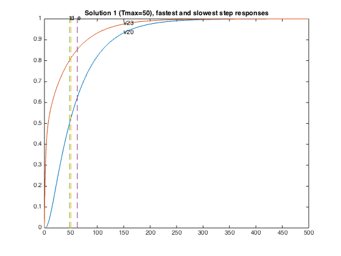
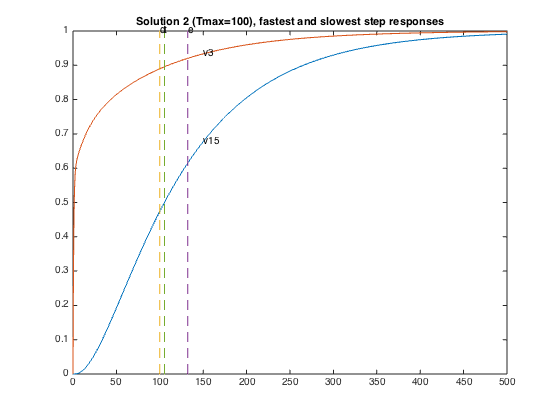
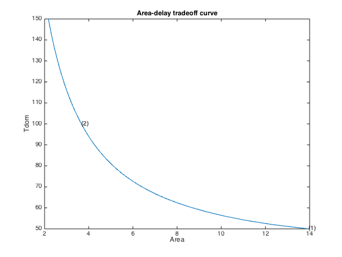

% Section 4, L. Vandenberghe, S. Boyd, and A. El Gamal % "Optimal Wire and Transistor Sizing for Circuits with Non-Tree Topology" % Original by Lieven Vanderberghe % Adapted to CVX by Argyris Zymnis - 12/04/05 % Modified by Michael Grant - 3/8/06 % % We consider the problem of sizing a clock mesh, so as to minimize the % total dissipated power under a constraint on the dominant time constant. % The numbers of nodes in the mesh is N per row or column (thus n=(N+1)^2 % in total). We divide the wire into m segments of width xi, i = 1,...,m % which is constrained as 0 <= xi <= Wmax. We use a pi-model of each wire % segment, with capacitance beta_i*xi and conductance alpha_i*xi. % Defining C(x) = C0+x1*C1+x2*C2+...+xm*Cm we have that the dissipated % power is equal to ones(1,n)*C(x)*ones(n,1). Thus to minimize the % dissipated power subject to a constraint in the widths and a constraint % in the dominant time constant, we solve the SDP % minimize ones(1,m)*C(x)*ones(m,1) % s.t. Tmax*G(x) - C(x) >= 0 % 0 <= xi <= Wmax % % Circuit parameters % dim=4; % grid is dimxdim (assume dim is even) n=(dim+1)^2; % number of nodes m=2*dim*(dim+1); % number of wires % 1...dim(dim+1) are horizontal segments % (numbered rowwise); % dim(dim+1)+1 ... 2*dim(dim+1) are vertical % (numbered columnwise) beta = 0.5; % capacitance per segment is twice beta times xi alpha = 1; % conductance per segment is alpha times xi G0 = 1; % source conductance C0 = [ 10 2 7 5 3; 8 3 9 5 5; 1 8 4 9 3; 7 3 6 8 2; 5 2 1 9 10 ]; wmax = 1; % upper bound on x % % Build capacitance and conductance matrices % CC = zeros(dim+1,dim+1,dim+1,dim+1,m+1); GG = zeros(dim+1,dim+1,dim+1,dim+1,m+1); % constant term CC(:,:,:,:,1) = reshape( diag(C0(:)), dim+1, dim+1, dim+1, dim+1 ); zo13 = reshape( [1,0;0,1], 2, 1, 2, 1 ); zo24 = reshape( zo13, 1, 2, 1, 2 ); pn13 = reshape( [1,-1;-1,1], 2, 1, 2, 1 ); pn24 = reshape( pn13, 1, 2, 1, 2 ); for i = 1 : dim+1, % source conductance % first driver in the middle of row 1 GG(dim/2+1,i,dim/2+1,i,1) = G0; for j = 1 : dim, % horizontal segments node = 1 + j + ( i - 1 ) * dim; CC([j,j+1],i,[j,j+1],i,node) = beta * zo13; GG([j,j+1],i,[j,j+1],i,node) = alpha * pn13; % vertical segments node = node + dim * ( dim + 1 ); CC(i,[j,j+1],i,[j,j+1],node) = beta * zo24; GG(i,[j,j+1],i,[j,j+1],node) = alpha * pn24; end end % reshape for ease of use in Matlab CC = reshape( CC, n*n, m+1 ); GG = reshape( GG, n*n, m+1 ); % % Compute points the tradeoff curve, and the three sample points % npts = 50; delays = linspace( 50, 150, npts ); xdelays = [ 50, 100 ]; xnpts = length( xdelays ); areas = zeros(1,npts); for i = 1 : npts + xnpts, if i > npts, xi = i - npts; delay = xdelays(xi); disp( sprintf( 'Particular solution %d of %d (Tmax = %g)', xi, xnpts, delay ) ); else, delay = delays(i); disp( sprintf( 'Point %d of %d on the tradeoff curve (Tmax = %g)', i, npts, delay ) ); end % % Construct and solve the convex model % cvx_begin sdp quiet variable x(m) variable G(n,n) symmetric variable C(n,n) symmetric dual variables Y1 Y2 Y3 Y4 Y5 minimize( sum( C(:) ) ) subject to G == reshape( GG * [ 1 ; x ], n, n ); C == reshape( CC * [ 1 ; x ], n, n ); delay * G - C >= 0; 0 <= x <= wmax; cvx_end if i <= npts, areas(i) = sum(x); else, xareas(xi) = sum(x); % % Display sizes % disp( sprintf( 'Solution %d:', xi ) ); disp( 'Vertical segments:' ); reshape( x(1:dim*(dim+1),1), dim, dim+1 ) disp( 'Horizontal segments:' ); reshape( x(dim*(dim+1)+1:end), dim, dim+1 ) % % Determine the step responses % figure(xi+1); A = -inv(C)*G; B = -A*ones(n,1); T = linspace(0,500,2000); Y = simple_step(A,B,T(2),length(T)); indmax = 0; indmin = Inf; for j = 1 : size(Y,1), inds = min(find(Y(j,:) >= 0.5)); if ( inds > indmax ) indmax = inds; jmax = j; end; if ( inds < indmin ) indmin = inds; jmin = j; end; end; tthres = T(indmax); GinvC = full( G \ C ); tdom = max(eig(GinvC)); elmore = max(sum(GinvC')); hold off; plot(T,Y(jmax,:),'-',T,Y(jmin,:)); hold on; plot( tdom * [1;1], [0;1], '--', ... elmore * [1;1], [0;1], '--', ... tthres * [1;1], [0;1], '--'); axis([0 500 0 1]) text(tdom,1,'d'); text(elmore,1,'e'); text(tthres,1,'t'); text( T(600), Y(jmax,600), sprintf( 'v%d', jmax ) ); text( T(600), Y(jmin,600), sprintf( 'v%d', jmin ) ); title( sprintf( 'Solution %d (Tmax=%g), fastest and slowest step responses', xi, delay ) ); end end; % % Plot the tradeoff curve % figure(1) ind = isfinite(areas); plot(areas(ind), delays(ind)); xlabel('Area'); ylabel('Tdom'); title('Area-delay tradeoff curve'); hold on for k = 1 : xnpts, text( xareas(k), xdelays(k), sprintf( '(%d)', k ) ); end
Point 1 of 50 on the tradeoff curve (Tmax = 50)
Point 2 of 50 on the tradeoff curve (Tmax = 52.0408)
Point 3 of 50 on the tradeoff curve (Tmax = 54.0816)
Point 4 of 50 on the tradeoff curve (Tmax = 56.1224)
Point 5 of 50 on the tradeoff curve (Tmax = 58.1633)
Point 6 of 50 on the tradeoff curve (Tmax = 60.2041)
Point 7 of 50 on the tradeoff curve (Tmax = 62.2449)
Point 8 of 50 on the tradeoff curve (Tmax = 64.2857)
Point 9 of 50 on the tradeoff curve (Tmax = 66.3265)
Point 10 of 50 on the tradeoff curve (Tmax = 68.3673)
Point 11 of 50 on the tradeoff curve (Tmax = 70.4082)
Point 12 of 50 on the tradeoff curve (Tmax = 72.449)
Point 13 of 50 on the tradeoff curve (Tmax = 74.4898)
Point 14 of 50 on the tradeoff curve (Tmax = 76.5306)
Point 15 of 50 on the tradeoff curve (Tmax = 78.5714)
Point 16 of 50 on the tradeoff curve (Tmax = 80.6122)
Point 17 of 50 on the tradeoff curve (Tmax = 82.6531)
Point 18 of 50 on the tradeoff curve (Tmax = 84.6939)
Point 19 of 50 on the tradeoff curve (Tmax = 86.7347)
Point 20 of 50 on the tradeoff curve (Tmax = 88.7755)
Point 21 of 50 on the tradeoff curve (Tmax = 90.8163)
Point 22 of 50 on the tradeoff curve (Tmax = 92.8571)
Point 23 of 50 on the tradeoff curve (Tmax = 94.898)
Point 24 of 50 on the tradeoff curve (Tmax = 96.9388)
Point 25 of 50 on the tradeoff curve (Tmax = 98.9796)
Point 26 of 50 on the tradeoff curve (Tmax = 101.02)
Point 27 of 50 on the tradeoff curve (Tmax = 103.061)
Point 28 of 50 on the tradeoff curve (Tmax = 105.102)
Point 29 of 50 on the tradeoff curve (Tmax = 107.143)
Point 30 of 50 on the tradeoff curve (Tmax = 109.184)
Point 31 of 50 on the tradeoff curve (Tmax = 111.224)
Point 32 of 50 on the tradeoff curve (Tmax = 113.265)
Point 33 of 50 on the tradeoff curve (Tmax = 115.306)
Point 34 of 50 on the tradeoff curve (Tmax = 117.347)
Point 35 of 50 on the tradeoff curve (Tmax = 119.388)
Point 36 of 50 on the tradeoff curve (Tmax = 121.429)
Point 37 of 50 on the tradeoff curve (Tmax = 123.469)
Point 38 of 50 on the tradeoff curve (Tmax = 125.51)
Point 39 of 50 on the tradeoff curve (Tmax = 127.551)
Point 40 of 50 on the tradeoff curve (Tmax = 129.592)
Point 41 of 50 on the tradeoff curve (Tmax = 131.633)
Point 42 of 50 on the tradeoff curve (Tmax = 133.673)
Point 43 of 50 on the tradeoff curve (Tmax = 135.714)
Point 44 of 50 on the tradeoff curve (Tmax = 137.755)
Point 45 of 50 on the tradeoff curve (Tmax = 139.796)
Point 46 of 50 on the tradeoff curve (Tmax = 141.837)
Point 47 of 50 on the tradeoff curve (Tmax = 143.878)
Point 48 of 50 on the tradeoff curve (Tmax = 145.918)
Point 49 of 50 on the tradeoff curve (Tmax = 147.959)
Point 50 of 50 on the tradeoff curve (Tmax = 150)
Particular solution 1 of 2 (Tmax = 50)
Solution 1:
Vertical segments:
ans =
0.6527 0.4397 0.5234 0.4709 0.2363
1.0000 0.8536 1.0000 0.9360 0.5700
0.9232 0.2956 0.8004 1.0000 1.0000
0.4130 0.1355 0.2676 0.6711 0.8879
Horizontal segments:
ans =
0.1966 0.1404 0.0000 0.0000 0.0000
0.0711 0.0634 0.0000 0.0000 0.0000
0.0000 0.0000 0.0000 0.0942 0.1586
0.0000 0.0000 0.0000 0.0852 0.0528
Particular solution 2 of 2 (Tmax = 100)
Solution 2:
Vertical segments:
ans =
0.2688 0.0437 0.1712 0.1338 0.0736
0.4135 0.0802 0.3064 0.2224 0.1485
0.2576 0.0802 0.1120 0.3835 0.2816
0.1344 0.0437 0.0245 0.2408 0.2453
Horizontal segments:
ans =
1.0e-09 *
0.5747 0.4778 0.4425 0.4777 0.5742
0.4646 0.3799 0.3518 0.3796 0.4627
0.4446 0.3756 0.3485 0.3756 0.4445
0.4412 0.3739 0.3472 0.3739 0.4412
  